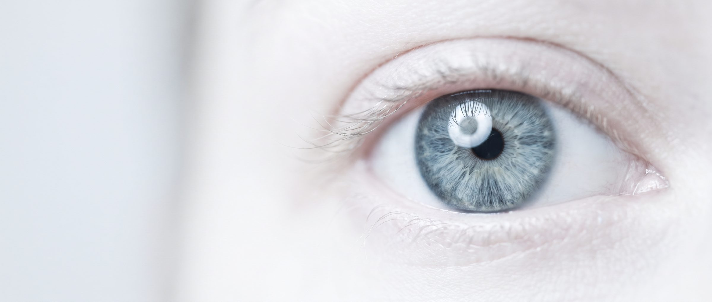
Zdravimo oči,
Očesni kirurški center
v srcu Ljubljane.
Barvarska steza 4, Ljubljana
Naročanje vsak delavnik od 8.00 do 15.00
Vodenje kirurškega centra združuje kreativnost, drznost, znanje, tehnologijo, timsko delo in posluh za posameznika. Za vsakega pacienta iščemo najboljšo rešitev. Drznemo si biti drugačni.

Operativni posegi
Od operacije sive mrene do življenja brez očal. Operiramo v dveh sodobnih operacijskih dvoranah, z materiali priznanih svetovnih proizvajalcev.
- Operacija sive mreneLečo odstranimo skozi rez, manjši od 2 mm, s tehniko Quick chop, ki jo je uvedel dr. Vladimir Pfeifer. Na napotnico ali samoplačniško.
- Excimer laserska korekcija dioptrijeT-SRK preoblikuje površino roženice brez reza. V 96 % pacienti dosežejo zelo dobro ostrino na daljavo brez korekcije.
- Multifokalne in torične lečeZnotrajočesne leče IOL in ICL Visian za kratkovidnost, daljnovidnost, astigmatizem in starostno presbiopijo.
- GlavkomBolezen, ki ne boli. Merimo očesni pritisk in debelino roženice, opravimo OCT papile in vidno polje ter izvajamo vse vrste glavkomskih operacij.
- Keratokonus in cross-linkingUV-A cross-linking utrdi roženico, ki se tanjša in boči. Pri začetnem keratokonusu ga lahko kombiniramo z laserjem.
- Estetske operacije očesaBlefaroplastika povešenih vek, ptoza, xantelazma in izrastki na vekah. Rez skrijemo v gubo kože.
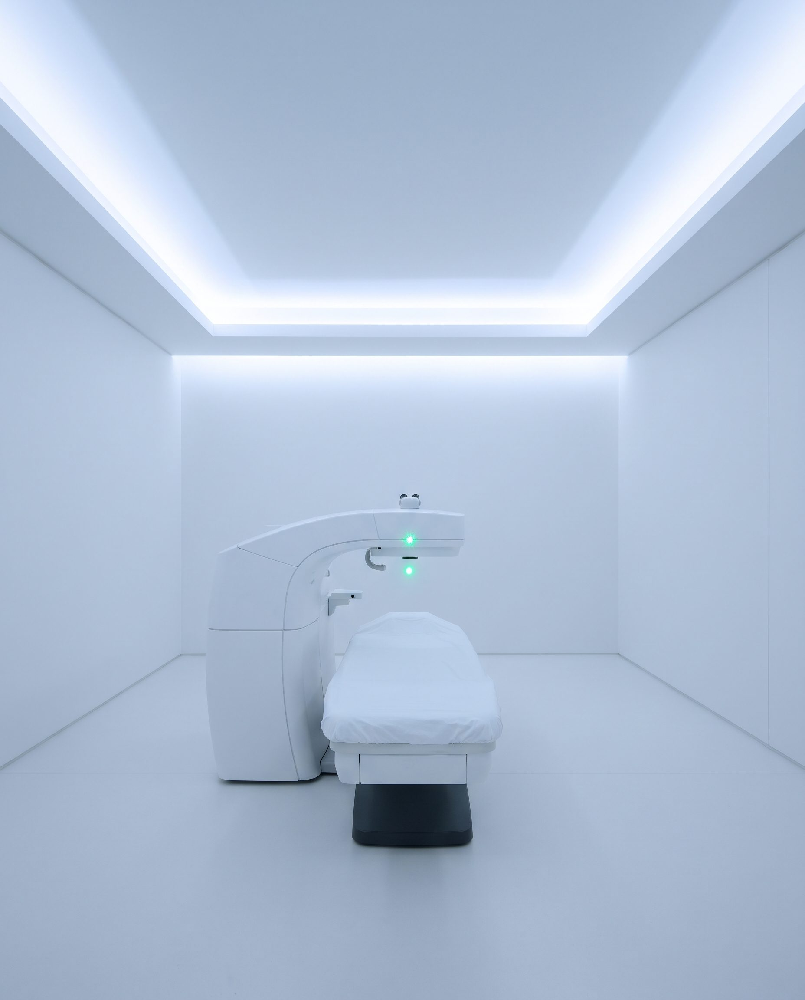
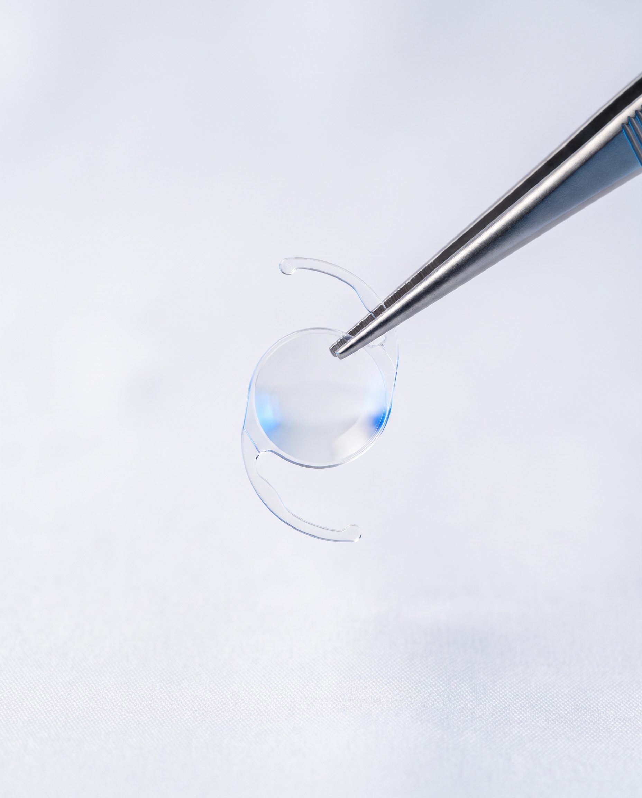
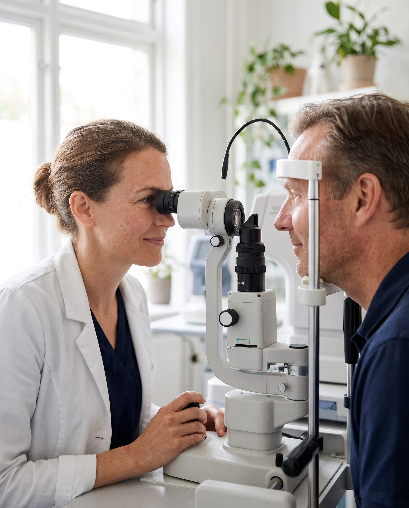
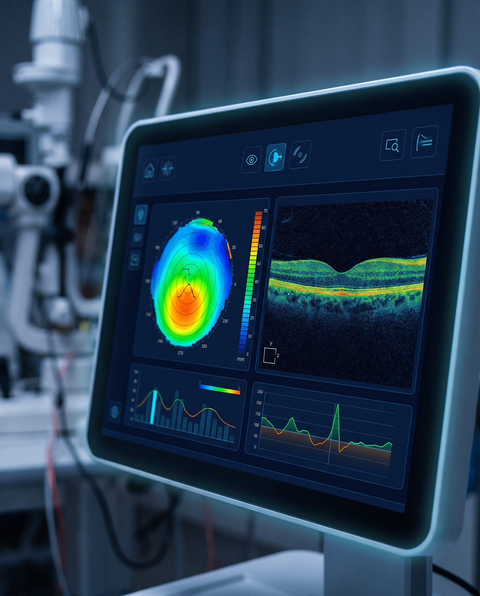
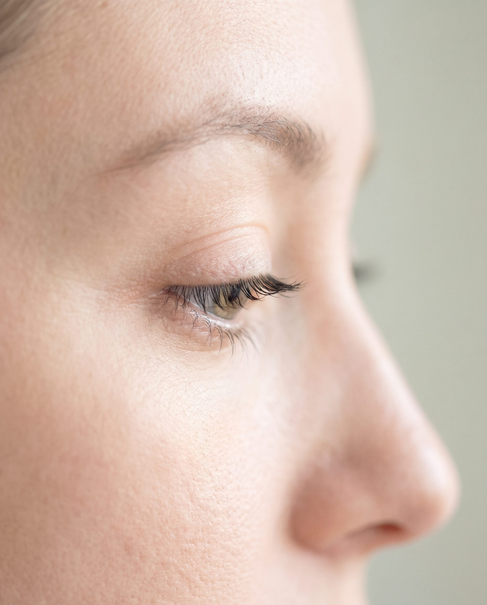
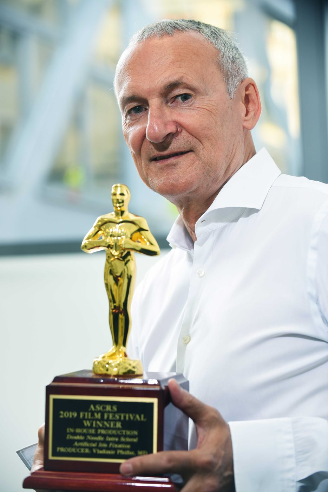
Tehnika, ki jo uporabljajo kirurgi po vsem svetu
Prim. mag. Vladimir Pfeifer je vabljeni predavatelj na kongresih vseh petih celin in učitelj moderne tehnike operacije sive mrene v evropskem in ameriškem združenju za kataraktno in refraktivno kirurgijo. Njegovo tehniko Quick chop danes uporabljajo številni svetovno priznani kirurgi.
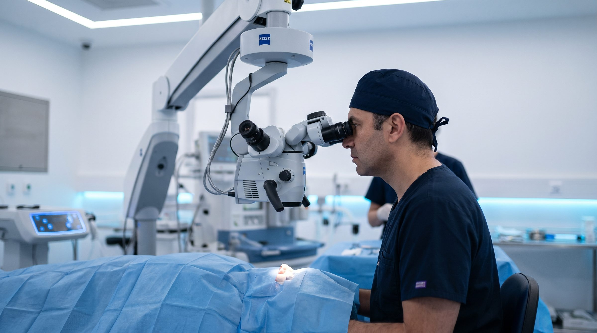
Dve operacijski dvorani in mikroskop Zeiss Lumera 700
Edini tako kakovosten mikroskop v Sloveniji. Nivo naših storitev je primerljiv z vodilnimi zahodnoevropskimi in ameriškimi očesnimi kirurškimi centri.
Varnost, ki jo lahko izmerimo
Vsi postopki so standardizirani, zato je možnost napake minimalna.


Akreditacija American Accreditation Commission International, certifikat ISO 9001 in EN 15224 za specialistične kirurške in ambulantne storitve v oftalmologiji.
Specialistični pregledi
Natančna diagnostika je začetek vsake dobre odločitve. Pregled pri nas opravite v desetih subspecialističnih ambulantah.
Preiskave in diagnostika
- Preventivni pregledi oči
- Preiskave pred Excimer laserjem
- Glavkomski pregledi
- OCT mrežnice in roženice
- OCT angiografija
- Fluoresceinska angiografija
- Foto očesnega ozadja
- Topografija roženice
- Spekularna mikroskopija
- Konfokalna mikroskopija
- Ultrazvok očesa
- IOL master
- Vidno polje
- Pahimetrija roženice
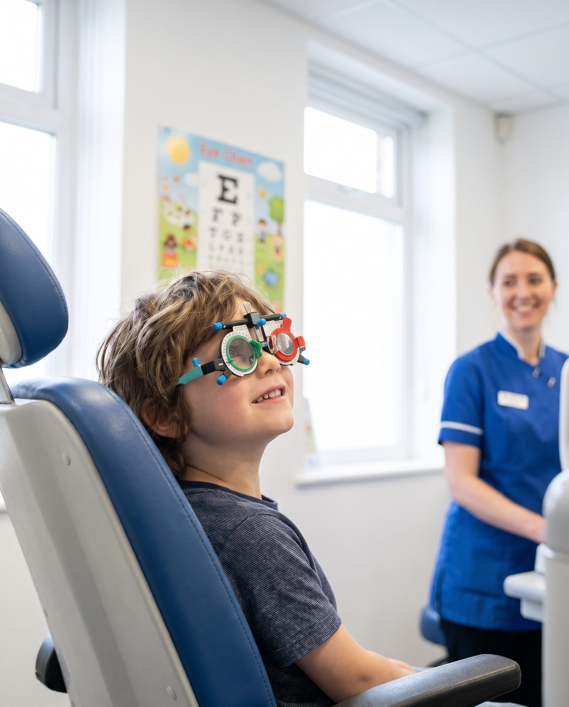
Otroška okulistična ambulanta
Pregled vida, predpis očal in kontaktnih leč, tudi pri najmlajših.
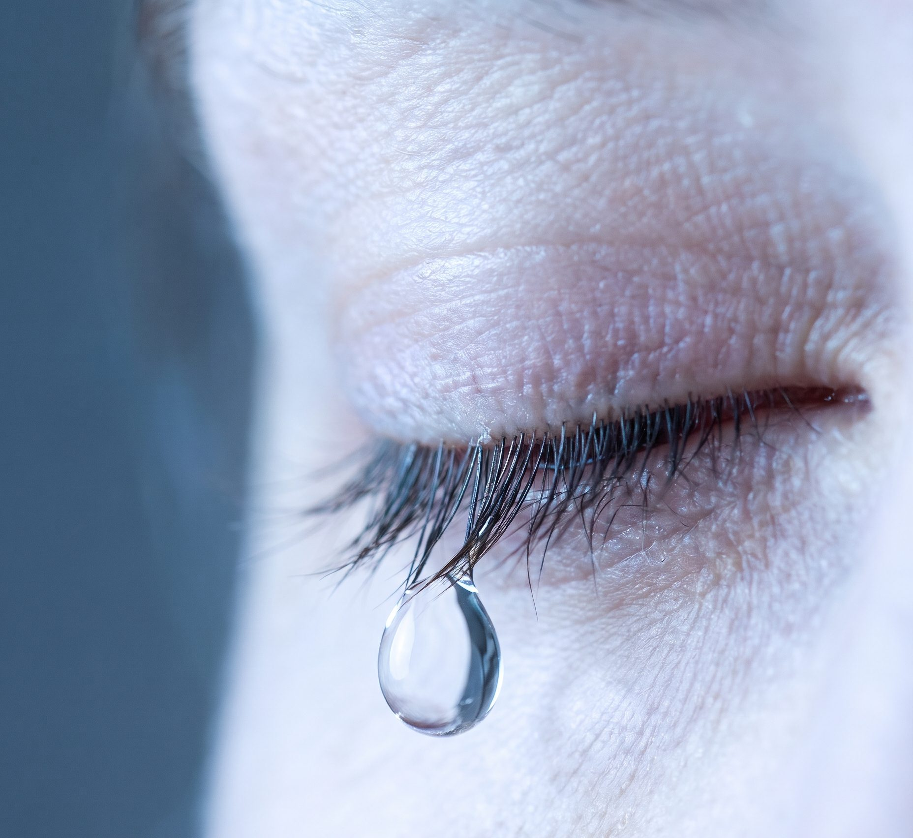
Ambulanta za suho oko
Neboleča terapija RESONO EYE, štirje tretmani po 20 minut.
Na napotnico
Na napotnico izvajamo preglede, povezane z operacijo sive mrene. Ostali pregledi in operacije so samoplačniški.
Ambulanta za bolezni mrežnice
OCT, angiografija in anti-VEGF terapija pri boleznih makule.
Naši zdravniki
Specialisti oftalmologi kirurgi, ki vlagajo v znanje enako kot v tehnologijo.
- Prim. mag. Vladimir PfeiferRefraktivna kirurgija, bolezni roženice
- Marija Ana Schwarzbartl PfeiferSiva mrena, glavkom, suho oko

- Asist. Mateja NajiBolezni mrežnice, plastična očesna kirurgija

- Ana Pajtler RošarBolezni mrežnice, vitreoretinalna kirurgija

- Doc. dr. Manca Tekavčič PompeOtroške očesne bolezni

- Prof. dr. Branka Stirn KranjcOtroške očesne bolezni

Novice
Priznanja, nove terapije in nasveti za zdrave oči.

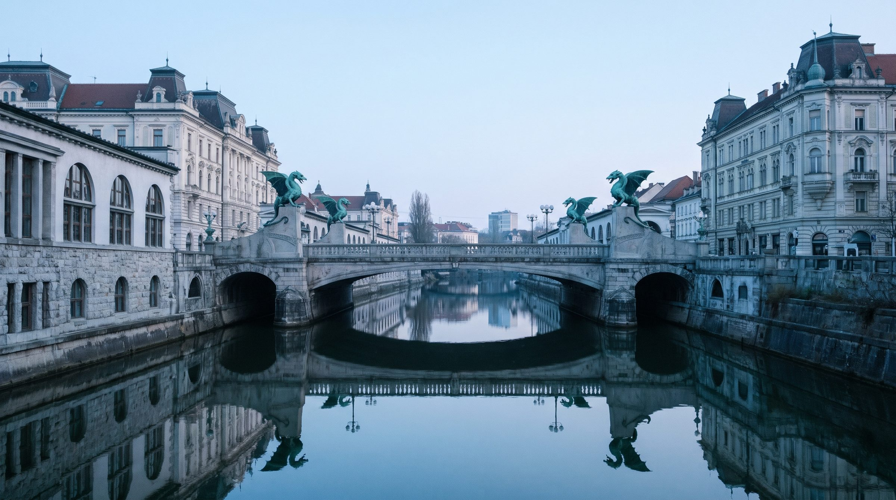
V centru Ljubljane, ob Zmajskem mostu
Z avtom
Parkirate v garažni hiši Kapitelj. Dvigalo vas pripelje naravnost v pritličje Medicinskega centra Vila Urbana.
Z avtobusom
Postaja pri Centralni tržnici ali na Resljevi ob Zmajskem mostu, od tam je do nas 5 minut hoje.
Naročite se na pregled
01 320 73 00od 8.00 do 15.00, osebno ali po telefonu
info@okc-pfeifer.si, pripišite kontaktno številko
Urgentni telefon 041 207 492